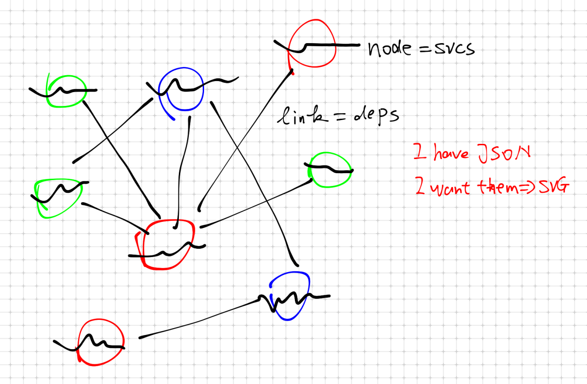

My
One-day work on
d3.js
Li, Yu
The Idea in my Head
I want to visualize the service dependencies inside
DogeOS
D3.js is ...
- javascript library in browser, in fact very similar to jQuery
- what makes it special is focusing on sets
- d3.js accepts data sets as input
- d3.js manipulates DOM/SVG node sets
In jQuery
$('#mystuff').foreach(function(item) { item ... });
in d3.js
svg.append('g').selectAll(".link").data(graph.links).enter()
.append("line").attr("class", "inactive")
IDEA to CODE (1)
My data => .JSON
{
"svc:/platform/i86pc/acpihpd": [ "svc:/system/sysevent" ],
"svc:/system/svc/restarter": [],
"svc:/milestone/name-services": [ "svc:/network/dns/client", "svc:/network/ldap/client" ],
"svc:/network/datalink-management": [],
"svc:/network/ip-interface-management": [],
"svc:/system/early-manifest-import": [],
"svc:/network/loopback": [ "svc:/network/ip-interface-management" ],
...
}
gd is the data object, which has
groups, nodes, links.
gd.groups.push(name);
gd.nodes.push({ name: n, group: gd.groups.indexOf(n) });
gd.links.push({ source: i, target: newIndex });
Codes range: index.html#L257-L294
IDEA to CODE (2)
Feed the data to d3.js layout, and create my svg elements.
// start force layout
var force = d3.layout.force();
// create the svg, feed the nodes data
var svg = d3.select("#graph").append("svg").append("g");
force.nodes(gd.nodes).links(gd.links).start();
// draw svg lines
var link = svg.append('g').selectAll(".link").data(gd.links).enter().append("line");
// draw svg nodes, which is circle + text
var nodeg = svg.append('g').selectAll(".node").data(gd.nodes).enter().append("g");
var circle = nodeg.append("circle")
circle.append("title").text(function(d) { return d.name; });
nodeg.append('text').text(function(d) { return d.name; });
Codes range: index.html#L177-L255
Others & Summary
So I build it in about one day. After the initial setup, more features can be added, such as click events, highlighting, and fontface!
Think what I need, draw something. Prepare your data, and copy&paste others code for some stupid thing.
Then you got some experience on d3.js, other improvements will be simple.